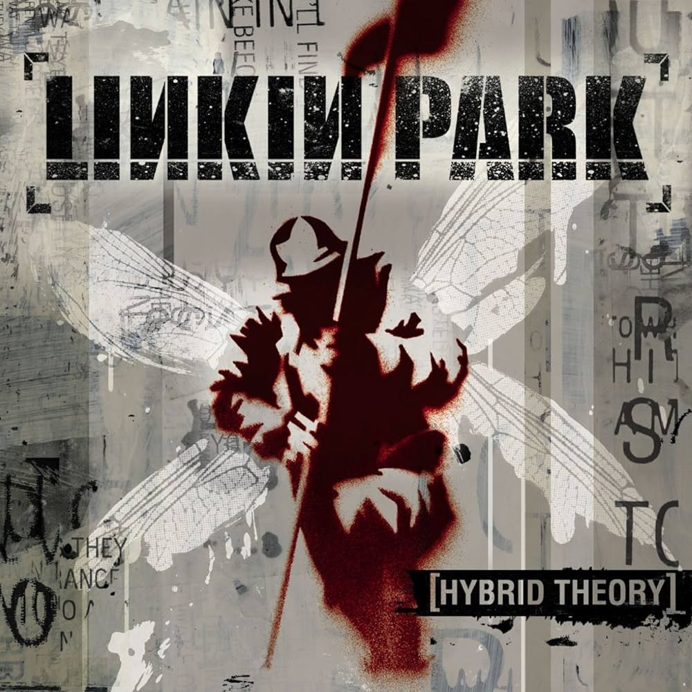
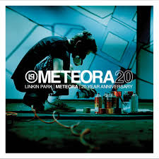
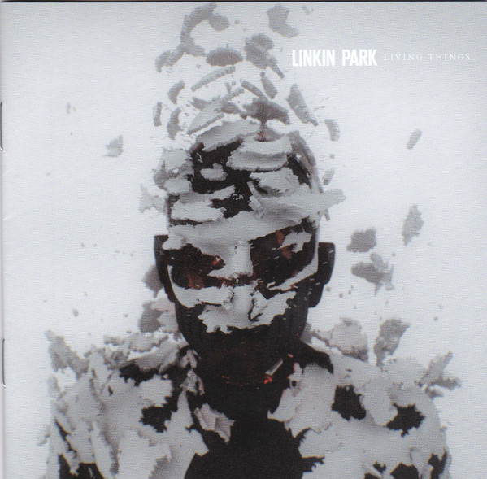

Álbuns

Hybrid Theory
Lançamento: 2000
- In the End
- Crawling
- Papercut

Meteora
Lançamento: 2003
- Numb
- Somewhere I Belong
- Breaking the Habit

Minutes to Midnight
Lançamento: 2007
- What I've Done
- Bleed It Out
- Shadow of the Day

A Thousand Suns
Lançamento: 2010
- The Catalyst
- Waiting for the End
- Burning in the Skies

Living Things
Lançamento: 2012
- Burn It Down
- Lost in the Echo
- Castle of Glass

One More Light
Lançamento: 2017
- Heavy
- One More Light
- Talking to Myself